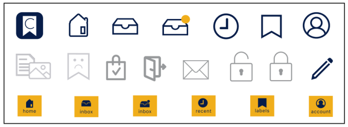
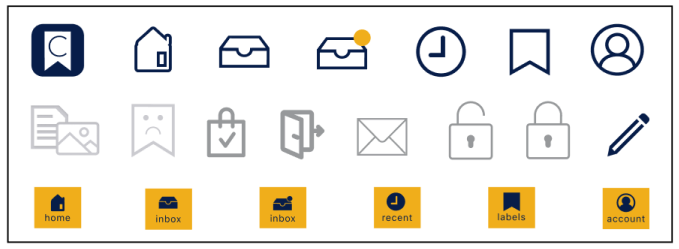
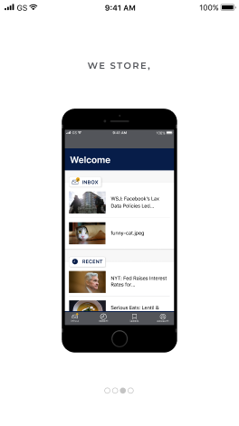
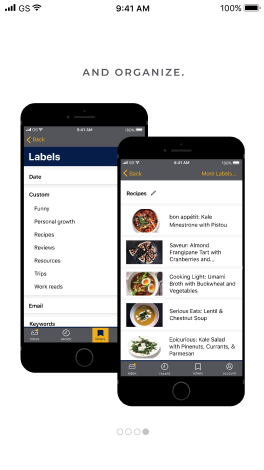
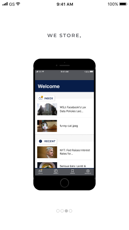
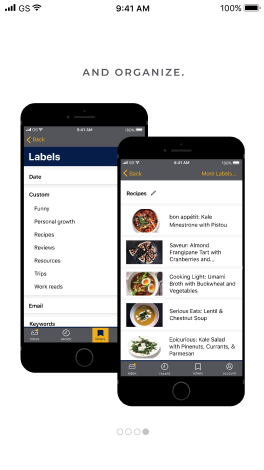

Competitive Analysis
I prepared a SWOT Analysis of three competitors.
Dropbox and Google Drive are two of the biggest names in cloud storage service and Pinterest catalogues and collects items found on the web.
I saw an opportunity for a new type of product: an application that organizes content by tags or labels as opposed to folders.
Removing the folder system that drives competitor’s applications allows users to retrieve content with greater ease.
Tags will automatically be created from the metadata of the file, such as title, location, author, website, and date.
Surveys and Interviews
I needed to figure out if people would even use an application like Cache.
The survey results showed that 50% of survey takers are sharing discovered content with close friends and family at least once a week.
They’re also sharing photos taken with their smartphone. Survey results and interviews also revealed a desire for easy organization and revisiting.

respondents who save content they discover online

respondents who don’t organize their bookmarks because it is too time consuming
Personas
I created two personas, one centered on photos and the other on articles.
Their main focus is the content itself, which needs to be easily stored and retrieved.

 



 


